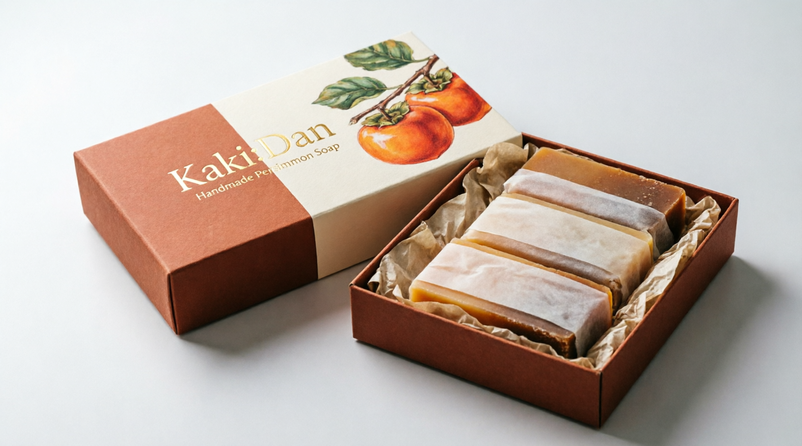

A handmade, fragrance-gentle bar built for thinner, drier skin — and one small extra benefit that matters more than it sounds: help with nonenal, the compound behind "old person smell."

Older skin gets thinner and drier, and most soaps make that worse — heavy fragrance and harsh foaming agents can sting or dry it out further. This bar is made without either, so it cleans without stripping the skin's natural oils.
As skin ages, oxidation of skin-surface fats increases production of a compound called nonenal — the source of the faint, waxy smell sometimes associated with getting older. Rather than covering it with strong perfume, this bar is formulated with persimmon extract, which has natural antioxidant and deodorising properties that help address nonenal at the source, on the skin itself.
A little goes a long way — the bars lather softly rather than foam heavily, which is part of why they're gentler on skin. Store in a dry dish between uses to make each bar last.
Sold Out